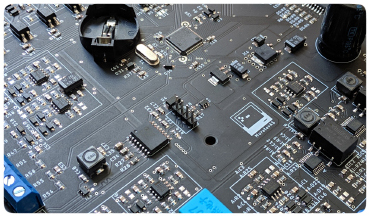
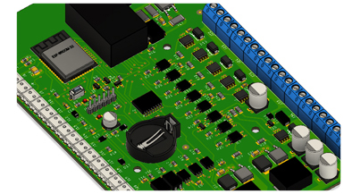
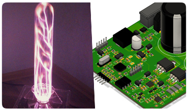

О себе
Занимаюсь осознанно разработкой электроники около 4х лет. За это время мной было разработано около 10ти устройств различного назначения. Среди которых имеются коммерческие и open-source проекты.
Основная часть времени был "использована" на разработку твердотельных силовых преобразователей, Применимых в различных отраслях бытовой и промышленной электроники (источников напряжения, ультразвуковые и индукционные установоки).
В настоящие время занимаюсь разработкой промышленных систем автоматики "и управление процессом сборки".
Мой подход — проектирование электронных устройств это искусства, где важны мельчайшие детали и общая композиция.
Знания и навыки
Профессиональные навыки:
+ Опыт разработки на STM32 (HAL и LL)
+ Навык проектирования аналоговых и цифровых схем
+ Опыт разработки комплекта конструкторской документации на электронное устройство:
САПР для электроники
- Altium Designer
- Autodesk Eagle
САПР вспомогательный
- Autodesk Fusion 360
- КОМПАС3D
+ Знание современной элементной базы
+ Знание технологии серийного производства электроники
+ Опыт в решении проблем ЭМС на печатных платах
+ Опыт проектирования Cиловой электроники
+ Опыт проектирования Промышленной автоматики
+ Опыт разработки на ESP32 (Arduino framework)
+ Навык SPICE моделирования в NI Multisim
+ Небольшой опыт руководства людьми
Навыки в сфере IT:
+ Опыт разработки на С/C++
+ Системы контроля версий git
+ Знание теории разработки программного обеспечение
+ Опыт работы с HTML5, JS
+ Знания Rust
+ Базовые знания PhotoShop
Проекты

Основана на stm32. Устройство обеспечивает удаленное управление и автоматизацию процесса плавки металла. Настройка осуществляется через приложение на ПК посредством ethernet.Устройство оснащено большим количеством цифровых/аналоговых входов-выходов с гальваническими развязкоми, что обеспечивает возможность внедрения в большенство современных установок.

Основана на esp32. "Она" Обеспечивает контроль всех узлов системы на протяжение полного цикла роста растений. Имеет высокий уровень автоматизации. Настройка осуществляется через WEB-интерфейс.На борту предусмотрены все необходимые каскады для контроля и управления.

Установка с газоразрядной лампой имеющая широкий диопазон настройк. Основное преимущество устройства — возможность модуляции сигнала высоковольтного генератора. Поддерживается 4 паттерна с возможность изменения частоты.